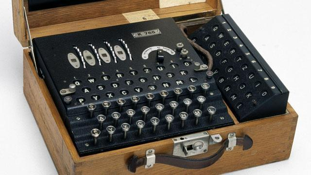
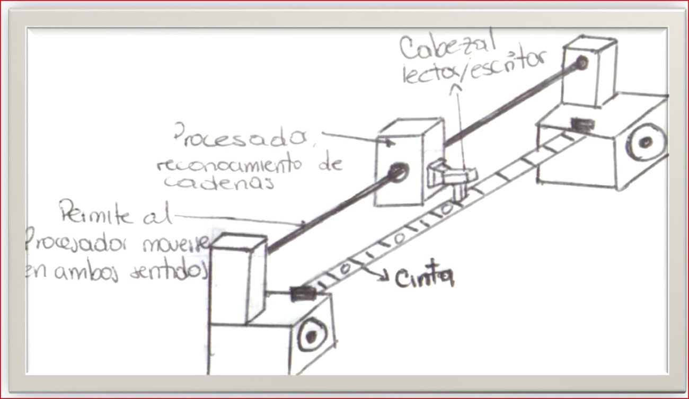

------------------------------------------------------------------------------------
Máquina de Turing

¿Qué es?
Una máquina de Turing, es un dispositivo teórico que manipula símbolos sobre una cinta de acuerdo con una tabla de reglas definida. Este modelo computacional puede ser adaptado para simular la lógica de cualquier algoritmo y es particularmente útil en la labor de explicar el funcionamiento de una CPU.
La máquina de Turing fue descrita por Alan Turing en 1936 como respuesta al ensayo del matemático alemán David Hilbert “On Computable Numbers, with an Application to the Entscheidungsproblem“ donde demostró que algunas de estas máquinas de Turing serían capaces de realizar cualquier cálculo matemático concebible si fuera representable con un algoritmo.
También probó que no existe solución al Entscheidungsproblem (problema de decisión) ya que demuestra que no es posible decidir, en general, algorítmicamente si una máquina de Turing se encuentra en parada.

¿Qué es lo que hace?
La máquina de Turing, modela de forma matemática una máquina que opera sobre una cinta. En esta cinta hay símbolos que la máquina puede escribir o leer, uno a la vez. Las operaciones que la máquina puede realizar están determinadas por un conjunto finito de instrucciones elementales como “si el estado es 6 y el valor es 0 escribe 1 y pasa al estado 27”.
Una máquina de Turing consta de las siguientes partes:
• Una cinta que está dividida en celdas una al lado de la otra. Cada celda contiene un símbolo en algún alfabeto finito. Dicho alfabeto contiene un símbolo especial en blanco (blank symbol escrito como ‘B’) y uno o más símbolos adicionales. La cinta se supone infinita.
• Una cabeza que puede leer y escribir símbolos en la cinta y mover la cinta a la izquierda o a la derecha una posición.
• Una tabla de reglas finita de instrucciones, usualmente tuplas de cinco elementos que dado el estado (qi) en el que se encuentra actualmente la máquina y el símbolo (aj) que está siendo leído desde la cinta, indica a la máquina que realice la siguiente secuencia de acciones:
- Escribe o borra un símbolo
- Mueve la cabeza (a la izquierda o la derecha)
- Asume el mismo o un nuevo estado según lo prescrito
• Un registro de estados donde se guarda el estado de la máquina de Turing.